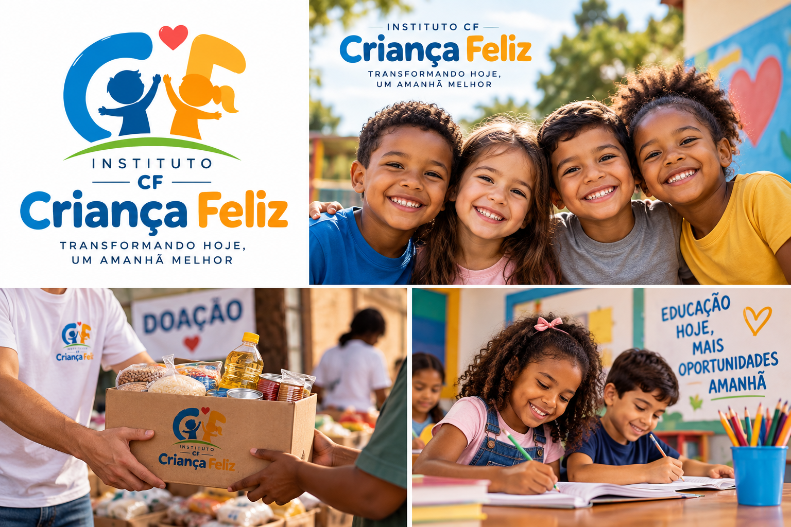

Sobre o Instituto
O Instituto CF - Criança Feliz desenvolve ações sociais voltadas ao bem-estar, à educação e à alimentação de crianças e famílias em situação de vulnerabilidade.

Nossa missão
Promover oportunidades e contribuir para o desenvolvimento de crianças por meio da educação, alimentação e participação da comunidade.
Entre em contato
Telefone: (11) 99999-9999
E-mail: contato@institutocf.org.br
Componentes de Feedback
Badges
Educação
Alimentação
Voluntariado
Alertas
✓ Cadastro realizado com sucesso!
⚠ Verifique os dados antes de continuar.
✕ Não foi possível concluir a operação.
Toast
✓ Sua solicitação foi enviada com sucesso!
Modal
Seja um voluntário
Obrigado pelo interesse em participar dos projetos do Instituto CF.